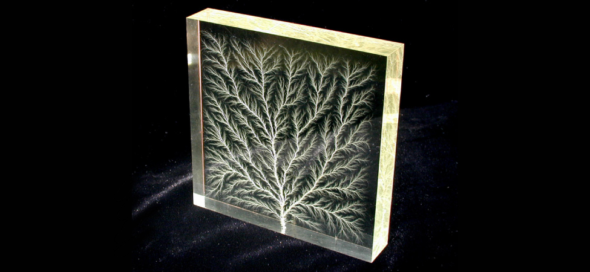

class="introduction"
class="key-equations" title="Key Equations"class="key-concepts" title="Summary"class="review-conceptual-questions" title="Conceptual Questions"class="review-problems" title="Problems"class="review-additional-problems" title="Additional Problems"class="review-challenge" title="Challenge Problems"class="try"class="checkpoint"class="section-exercises"class="check-understanding"The tree-like branch patterns in this clear Plexiglas® block are known as a Lichtenberg figure, named for the German physicist Georg Christof Lichtenberg (1742–1799), who was the first to study these patterns. The “branches” are created by the dielectric breakdown produced by a strong electric field. (credit: modification of work by Bert Hickman)

Capacitors are important components of electrical circuits in many electronic devices, including pacemakers, cell phones, and computers. In this chapter, we study their properties, and, over the next few chapters, we examine their function in combination with other circuit elements. By themselves, capacitors are often used to store electrical energy and release it when needed; with other circuit components, capacitors often act as part of a filter that allows some electrical signals to pass while blocking others. You can see why capacitors are considered one of the fundamental components of electrical circuits.